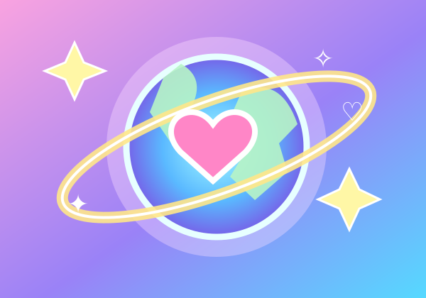

Super Duper Me
Confidence, energy and being yourself.
↓ Download MP3Bright, upbeat songs for recess, lunch breaks, classroom movement, assemblies, school dances and celebrations. Listen, download, and enjoy—no fees, subscriptions or promotion required.
♫ Listen & downloadRead free-use permissionSchools may download these MP3 files for non-commercial school-related use under the permission below.
Confidence, energy and being yourself.
↓ Download MP3Happy feet and active movement breaks.
↓ Download MP3
Friendship, kindness and togetherness.
↓ Download MP3We want more children to enjoy music! Schools, school boards, teachers and educational organizations worldwide are granted a free, non-exclusive, royalty-free permission to use these three recordings for non-commercial educational and school-related activities.
You may:
Not permitted: selling the recordings, commercial redistribution, commercial advertising, or granting commercial sublicenses. No payment, credit, promotion or reporting is required.
The creators retain whatever rights they own or control. This permission does not transfer copyright ownership, override third-party rights or guarantee that online platforms will not apply automated content identification.
Schools remain responsible for student privacy, safeguarding, and other applicable rules when posting videos. For questions or commercial permissions, contact the creators through their official music channels.
Use the music wherever it brings a little more movement, confidence and joy to your school community. There is no need to send us photos or videos of children.
Explore the original music website